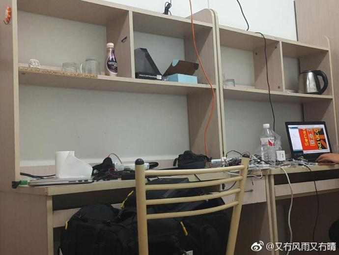

Bing16
当我在神游时，我在想些什么。
生，你就如此。失信之人，必将收到唾弃。
—— 2018-07-07 16:25
毕业了，毕业了，而我在哪呢？ 将所有怨气和不满融入无意识状态下写的作业，混混沌沌地写了七八千字，回过神来才发现别人才写了三四千字。。。 我究竟在做什么，花了一天时间就在写这些！？
—— 2018-07-08 23:24
唯有那一句，热闹是他们的，我什么也没有。
—— 2018-07-10 07：42
这不冷不热的水就如同这潮湿闷热的天气，使人快活不起来。
—— 2018-07-12 22:45
为什么为什么为什么，你天生丽质又身获功与名？！
—— 2018-07-13 20:14
看了新雅大佬的伦敦日记，不禁感叹到：哇大佬太强了。
—— 2018-07-14 16:41
MRPi似乎烧了？今天就是分别日了，唉，世事难如愿啊。
—— 2018-07-15 08:17
法国队确实很强，如果克罗地亚控球率再低一些的话恐怕比分差距会很大。 法国队进攻的速度和效率真是可怕，尤其是后半场明显感觉到克罗地亚球员的体力有些跟不上，虽然克罗地亚对法国队的控球很精彩， 但还是难免会有失误。——醒后再次思考了昨日的决赛。（另：老天并没有眷顾大佬的选择，这是很平凡的事实）
—— 2018-07-16 07:37
善意对于给予者有什么用呢？不过一种选择罢了。
—— 2018-07-23 17:20
人家都直接出国了，我呢？
—— 2018-07-23 17:20
欸，时至今日不得不准备托福和分级考试了。
—— 2018-07-26 09:26
右手又开始酸了。。
—— 2018-07-26 21:22
这世上的人大可分为坚持理性和坚持感性者，两者不可简单的分为对或是错。 有些人坚持理性大过于感性，因其理性思维的正确与否决定了其思维正确与否；同样的，感性思维者的正误则依于其感其觉正确与否。 感性思维为主者的判断失误大多可以通过理性上的引导使其向正确的方向，毕竟这社会间的交流以“以理服人”为主。 但要想纠正坚持理想者的思维却要更难一些，即使是自身感觉到有些偏差却因为其本身本坚持理想往往相信自身， “以情动人”有时候只能动人，一些深入思维的东西难以改变。
—— 2018-08-01 13:50
-奥雷里亚诺，马孔多在下雨
-别犯傻了，赫里内勒多，八月下雨很正常
—— 2018-08-02 22:47
我tmd究竟在做些什么啊？！
—— 2018-08-05 23:33
又看到那句话，“人生，有一二知己足矣！”，然而……
—— 2018-08-11 20:29
即将进入浙江省，突然想起那篇我很喜欢的优秀作文《殊途共归》， 它的立意角度真的很独特而又有深度。又想起那两年任务驱动型作文是很火的， 似乎也是从那一个多月的训练开始喜欢那些对某个事件多角度分析的文章。 但已记不清当时我们考的什么题目，也已忘却了当时写了什么，只是隐约记得考完后对自己写的作文还是挺满意的。
—— 2018-08-16 08:28
一个七夕就在刷夜中不知不觉的过完了。晚上和小姐姐小哥哥交流后感觉他们一些想法挺好的但也存在一些问题，
因而感谢曾经的经验，感觉目前的阅历，无论如何仍要学习一个。
有时候在做项目时会感觉到对机械或汽车这方面的东西感到无聊，
一方面可能是因为长期接触这方面的东西后有些审美疲劳，
另一方面可能是了解越多后越清楚自身认识的不足以及想做好一件东西的难度，
但无论如何仍要学习一个，难于实现什么的不算问题。

—— 2018-08-18 02:48
归去来兮。
—— 2018-08-22 21:01
回到学校看到一群小学弟小学妹忽然意识到自己已经变成了老学长，难受。
—— 2018-08-23 16:11
在这百无聊赖的夜晚，我想起了夕阳，想起了那无虑的傍晚。 那时你依靠着栏杆，眺望着未知的远方，等待着那熟悉的身影融入日光。 至少那时没什么顾忌，虽是日复一日的重复，好歹也能在劳碌中寻得慰藉。 至少那时心有所想情有所抒，即使同是思念，也能有个对象，不至于在白日里空无，在深夜里迷失了自我。
—— 2018-08-27 00:24
一时间充满了希望，而后又陷入谷底。
—— 2018-08-31 23:31
突然发现已经九月了，惊讶，惶恐。
—— 2018-09-01 00:04
他像死鱼一般躺在昏暗的房间里，嘴巴微微张开，像是想呼唤着什么， 床板粘住他的身体。是的，连同各种器官的感受，都像是从盆里蹦出后即将渴死的鱼一般。 呼呼的空调风扇声似乎能盖住那压抑着的呼吸声， 他想，是该做些什么了，在一觉醒后，在一切突然转空之后。
—— 2018-09-02 14:17
看到“2016”几个数字时总是有些小激动， 过了会才想到如今已经8012年了，为何呢，似乎记忆仍停留在2016年。
—— 2018-09-02 21:13
Hey, god. I want to be the man like him.
—— 2018-09-03 13:01
听到那首《笨小孩》突然想起高一时的十大歌手比赛和那些人那些时光。
—— 2018-09-06 20:58
在归零后，我又想起了以前的时候，仅是一个不由自主的动作。 那时他的动作也是有些夸张，似是戏精本精。 我们也曾书信交流过好几个学期，在信中我谈起当时，念起从前， 我当然提起那个在黄昏下打羽毛球的事情，我不记得是否问起过那个一直心心念念的人。 若要追述起来，应是可以通过来信推测，去件应没备份或仅是记在那好几本稿纸中。 他要转来时我也曾充满期待，包括他的身份，好像在一个多学期因为“海妹”的中间联系才得以认识。 后来发现他似是，而又似不是。
—— 2018-09-10 08:21
一个大胆的想法： 通过堆砌传感器和深度学习、遗传算法制造一个人工智能机器人？
—— 2018-09-10 16:10
日渐倒霉，今年得了各种优秀奖(微笑.jpg)。
—— 2018-09-11 13:10
对未来仍有一丝期望，却又不抱有希望。 生活就是如此，或许说我的生活就是如此，曾经我也以为未来闪闪发光，曾经也意气风发少年时啊。 但如今是如此，我不知该何去何从。
—— 2018-09-12 10:21
一觉醒来，也算是真正成为大三的老学长了。 舍友们也开始各奔东西各寻出路。我似乎也该物色着什么。 我向来抱着一种怀疑的态度，怀疑即使坚持着的某个东西也难以如愿， 因而不愿在一棵树上吊死，但也往往未尽全力，不得如愿。
—— 2018-09-17 07:44
终于做了梦，噩梦缠身，似乎不再麻木不仁了。
—— 2018-09-18 07:42
终究不能成为你那样的人。而今迈步从头越。
—— 2018-09-21 00:43
脱下衣服后，我们彼此不再认识。
—— 2018-09-21 00:44
消极政策令人嫌弃，一味的禁止不过是懒政昏钝的表现， 是不自信不能直面困境的结果。
—— 2018-09-21 12:13
啥皇帝，不过仗势欺人的和尚！
—— 2018-09-27 09:50
I cannot believe it.
—— 2018-09-27 09:50
昨晚突然就下雨了，措不及防的。
—— 2018-09-28 08:43
Wc，真的不敢相信。
—— 2018-09-28 18:47
10月1日，你走了，虽然没离开也不会发生什么。
(谁走了？是约了小聚的他？——2018.12.13)
—— 2018-10-01 16:40